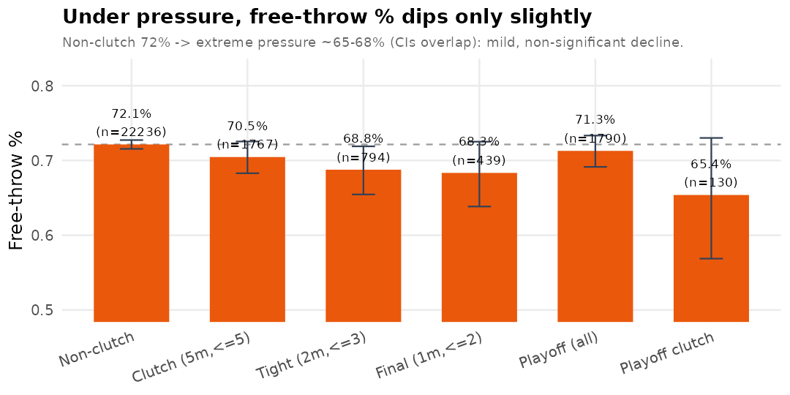
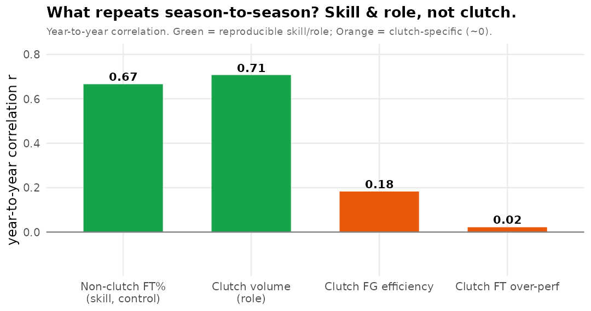
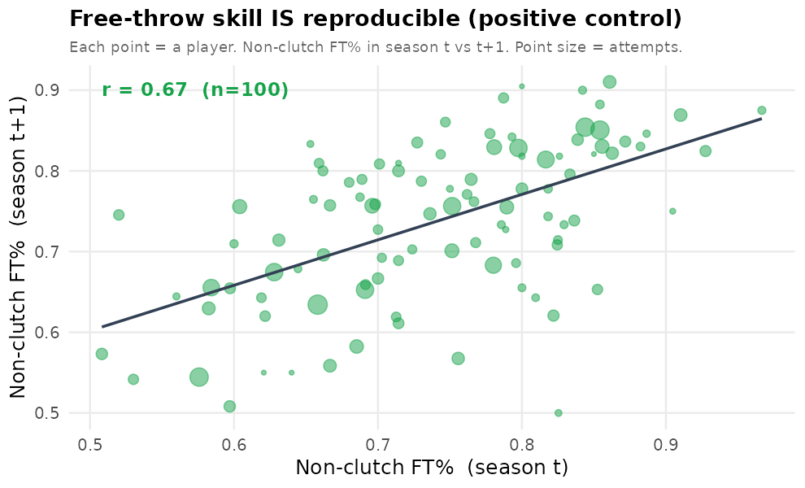

핵심 질문은 "클러치 슈터가 있다/없다"가 아니다. 최종 질문은 "선수 간 클러치 실력의 분산이 통계적으로 0에서 벗어나는가, 그리고 그것이 시즌 간 반복되는가"이다. "대부분 운"이라는 결과도 유효한 발견으로 본다.
클러치는 (1) 쫓기는 시간 + (2) 쫓기는 점수(종료 5분 이내 & 점수차 ≤5)라는 압박 상황에서 개인이 평소 기대치를 넘어 상황을 타개하는 능력으로 정의했다. 축구 xG의 발상을 빌려, 각 슛에서 실제 득점이 기대 득점(리그·개인 기준선)보다 얼마나 높았는지를 레버리지(승률 영향력)로 가중해 합산했다.
KBL 공식 API에서 3시즌 정규시즌(각 270경기)과 3시즌 플레이오프(총 61경기)의 play-by-play를 수집했다. 크롤링 데이터의 신뢰성을 세 개의 독립 소스로 삼중 교차검증했다: ① 일정 API 점수, ② PBP에 박힌 공식 점수, ③ 이벤트를 직접 합산한 재구성 점수.
| 구분 | 경기 수 | 삼중 점수 일치 | 이벤트·코드·구조 점검 |
|---|---|---|---|
| 정규시즌 (3시즌) | 810 | 809 / 810 (99.9%) | 모두 통과 |
| 플레이오프 (3시즌) | 61 | 61 / 61 (100%) | 모두 통과 |
잔여 이상치 3종(1경기 상류 API 이벤트 누락, 2경기 n 시퀀스 결측이나 정렬키는 정상,
1건 시간표기 오류)은 모두 국소적·무해로 확인. → 분석 결론에 영향을 주는 데이터 오류 없음.
검정력을 높이기 위해 리그 기준선(WP σ·β, OReb, xG)은 세 시즌 풀링, 선수 단위는 선수×시즌으로 유지했다. 크로스-시즌 일관성(러닝스코어 100/100/99.6%, 2·3점 성공률·OReb 시즌 편차 상식 범위)을 먼저 확인해 풀링의 타당성을 검증했다.
| 검정 | 결과 | 해석 |
|---|---|---|
| 존재검정 (선수 간 분산 τ²) | ICC < 0.02, 순열 p ≈ 0.03–0.05 | 한계적 |
| 시즌 간 지속성 (year-to-year) | r ≈ 0.02 (p ≈ 0.83) | 지속성 없음 |
| 스플릿-하프 신뢰도 | SB ≈ 0.26 | 대부분 잡음 |
방법론 하드윈: 원본 존재검정의 분산분해가 가중/비가중 스케일 불일치로 τ²와 순열검정이 어긋나던 문제를 표준 불균형 일원 랜덤효과 추정량(τ̂²=(MSB−MSW)/n₀)으로 일치시켰다.
설계 문서의 Clutch Score(PAE × 시간가중 × 점수차가중 × 상태변화가중, 자유투 포함,
개인 비클러치 성공률 기준)를 충실히 구현하고, 문서에 없던 존재·지속성 검정을 붙였다.
| 검정 | 상관 / 유의성 |
|---|---|
| 존재검정 (시도당 PAE·CS) | ICC ≈ 0.006, 순열 p ≈ 0.02–0.03 (한계적) |
| 시즌 간 지속성 (CS/시도당) | r = 0.08 (p = 0.40) — 없음 |
| 양성 대조군: 비클러치 FT% | r = 0.62 (p ≈ 0) — 강한 지속성 |
질문 자체를 바꿔 긍정적으로 서술 가능한 결론을 도출했다.
| 관계 (선수×시즌, 연속 시즌) | 상관 r | 의미 |
|---|---|---|
| 과거 클러치 볼륨 → 미래 볼륨 | 0.69 (β=0.69) | 역할은 강하게 지속 |
| 과거 클러치 효율 → 미래 효율 | 0.01 | 효율은 재현 안 됨 |
| 과거 효율 → 미래 볼륨 | 0.03 | 효율로 역할 안 줌 |
→ 팀은 효율 근거 없이 같은 선수에게 클러치 역할을 계속 맡긴다. 클러치 슈터는 재현되는 '역할·믿음'으로 존재하되, 그 믿음은 효율로 뒷받침되지 않는다.
클러치 상황에서 리그 전체 야투 성공률이 유의하게 하락한다(3시즌 일관): .446 → .405 (Δ−0.041, p = 6×10⁻⁹). 자유투는 평평(Δ−0.017, p=0.13). 자유투 유도율은 클러치에서 약 2배(종반 고의 파울 포함). → 클러치는 특정 개인의 문제가 아니라 수비 강화·압박으로 리그가 함께 겪는 구조.
조직적 '초킹' 증거 없음(p=0.13). 클러치 FT 성공은 개인 평소 FT%로 설명되고(β=2.28, p≈10⁻⁵), 그 위의 클러치 FT 편차는 지속성 없음(r=0.03). → 가장 깨끗한 조건에서도 평소 실력만 재현될 뿐, 별개의 클러치 능력은 없다.
"없다"를 넘어 "있어도 무시 가능"을 증명: 클러치 실력 SD의 95% 상한은 0.064(슛 1개 잡음 σ≈0.48의 1/7), 지속성 상관 95% 상한 0.25. 레버리지를 승률(WP) 단위로 환산(0.189 WP/클러치슛)하면 재현 가능한 클러치 실력의 가치 ≤ 0.08승/시즌 — 로스터 판단 임계(0.5승)에 한참 못 미침.
클러치 볼륨은 외국인에 더 집중(41.9% vs 38.3%, p=3×10⁻⁷)되나 FG% 하락은 국적 불문. 외국인 클러치효율의 겉보기 지속성(r=0.54)은 교란 — 비클러치 지속성이 더 높음(r=0.65) = '평소 잘 쏘는 선수' 아티팩트이지 클러치 특이적 아님. 팀 클러치 성과 지속성 없음(r=−0.03)이나 최다슈터 점유율(평균 28%)은 안정(r=0.71). → 모든 수준에서 재현되는 건 '실력'이 아니라 '역할·구조(누가 던지냐)'.
리그가 '클러치'로 부르는 선수들(대상 26 선수-시즌)의 그 시즌 내 백분위 평균: 볼륨 76위 / 효율 48위. 많이 나서지만(상위) 효율은 딱 중간. 이들끼리만 봐도 시즌 간 효율 상관 r=−0.41(반복 안 됨), 볼륨 r=0.56(역할 유지).
| 선수 | 클러치 볼륨 백분위 (23→24→25) | 효율 백분위 | 비고 |
|---|---|---|---|
| 이정현 | 100 / 99 / 96 (리그 최다급) | 47 / 43 / 34 | 볼륨 최상위, 효율 중간 이하·하락 |
| 김선형 | 82 / 96 / 84 | 34 / 31 / 41 | 평균 PAE 3시즌 모두 음수 |
| 허훈 | 89 / 94 / 89 | 29 / 39 / 69 | 볼륨 고정, 효율 출렁 |
효율 최상위 시즌을 찍은 오세근(96)·이재도(93)는 그게 8~10시도짜리 소표본이고 직전 시즌은 하위권. → '클러치 명성'은 반복되는 성과가 아니라 팀·팬이 부여한 역할·기대에 가깝다.
플레이오프는 리그에서 가장 압박이 큰 무대다. 클러치를 5분 창에 얽매지 않고 '큰 무대에서의 개인 퍼포먼스' 자체로 보고, 같은 시즌 정규 → 플레이오프 전이를 검정했다.
| 질문 | 결과 |
|---|---|
| 정규 전반 실력 → 플레이오프 성과 | r = 0.20 (p = 0.02) |
| 정규 5분 클러치 → 플레이오프 성과 | r = 0.03 (p = 0.78) |
| 회귀에서 클러치가 전반 실력 너머 기여 | β = 0.00 (p = 0.79) — 없음 |
| 'PO에서 빛남'(부스트)을 사전 예측 | 클러치 r=0.01 / 전반 r=−0.30(평균회귀) |
R²가 작은 이유: 플레이오프 성과의 측정 신뢰도가 0.25(선수당 ~20슛)라, 어떤 예측변수도 관측 상관 최대치가 √0.25≈0.50에 불과 — 노이즈는 설명 불가. WLS 가중·신뢰도 보정 시 '정규 실력→큰 무대'의 참 관계는 관측치(0.20)의 2배 이상으로 강하다. 반면 5분 클러치는 보정해도 0 근처 → 결론 불변.
자유투는 난이도 고정·수비 무관이라 순수 '압박' 효과만 분리된다. 가장 설득력 있던 결과 (자유투 '실력'의 재현성)를 확장해, 압박이 개인에게 다르게 작용하는지 세 각도로 파고들었다.



"클러치 슈터는 없다"가 아니라, 더 정확히는 —
→ 리그가 '클러치 슈터'라 부르는 것은 반복되는 성과가 아니라 부여된 역할·믿음이다. 방법이 진짜 실력(FT%·전반 슈팅)은 명확히 검출한다는 점이 이 결론을 단단하게 뒷받침한다.
(game_id, period, api_row_order)로. time_remaining은 파생 이벤트에서 부정확.전체 파이프라인·리포트·데이터는 저장소의 R/, docs/에 재현 가능하게 정리되어 있음.